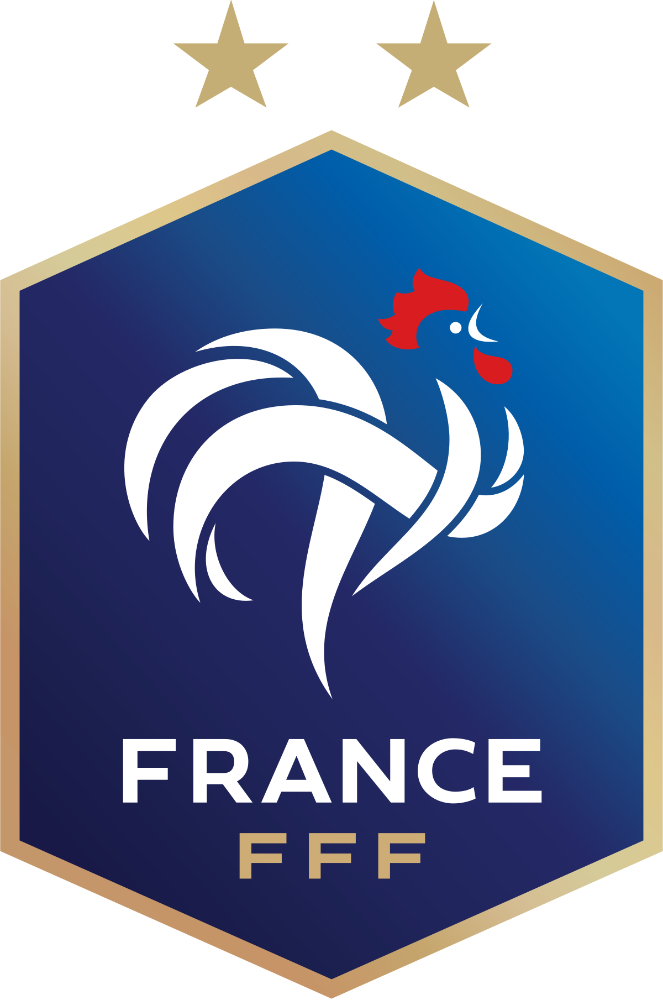

Kylian Mbappé Lottin, né le 20 décembre 1998 dans le 19e arrondissement de Paris, est un
footballeur international français qui évolue au poste d'attaquant au Paris Saint-Germain,
en Ligue 1.
Vainqueur du championnat de France en 2017 avec l'AS Monaco, il est transféré au
Paris Saint-Germain le 31 août 2017. Le soir même, il marque son premier but en équipe de
France.
Kylian Mbappé est l'un des acteurs majeurs de l'équipe de France qui remporte la Coupe du
monde 2018 en Russie sous la houlette de Didier Deschamps. Champion du monde à dix-neuf
ans, il devient le deuxième plus jeune joueur après Pelé à inscrire un doublé en phase
finale de Coupe du monde (en huitième de finale face à l'Argentine) et à marquer lors de
la finale, remportée 4-2 devant la Croatie. Buteur à quatre reprises, il est désigné
meilleur jeune joueur de la compétition par la FIFA.
Fin 2018, il remporte le trophée Kopa du meilleur joueur mondial de l'année de moins de 21 ans.
Le 11 juin 2019, il est le plus jeune joueur à inscrire 100 buts en professionnel, à 20 ans et
5 mois, et également en 2021, à 22 ans et 291 jours, à atteindre les 50 sélections avec le
maillot Bleu. Le 13 novembre 2021, lors du match qui donne la qualification aux Bleus pour
la Coupe du monde 2022 face au Kazakhstan (8-0), il inscrit le premier quadruplé d'un joueur
français en compétition depuis Just Fontaine, lors de la Coupe du monde 1958.
Situation actuelle
Equipe :
Paris Saint-Germain
Numéro :
7
Biographie
Nom :
Kylian Mbappé Lottin
Nationalité :
Français
Naissance :
20 décembre 1998 (22 ans) Paris 19e (France)
Taille :
1,78 m
Période pro :
Depuis 2015
Poste :
Attaquant
Pied fort :
Pied droit
Parcours junior
2004 - 2011 :
AS Bondy
2011 - 2013 :
INF Clairefontaine
2013 - 2015 :
AS Monaco
Parcours senior
2015 - 2018 :
AS Monaco (60 matchs - 27 buts)
2018 - ... (188 matchs - 141 buts) :
Paris Saint-Germain
Sélections en équipe nationale

2017 :
France -17 ans (2 matchs - 0 buts)
2016 - 2017 :
France -19 ans (11 matchs - 7 buts)
2017 :
France (53 matchs - 24 buts)
Palmarès
Vainqueur de la Coupe du Monde :
2018 (France)
Vainqueur de la Ligue des Nations :
2021 (France)
Champion de France :
2017 (Monaco) - 2018, 2019, 2020 (Paris-SG)
Meilleur buteur du Championnat de France :
2019, 2020, 2021 (Paris-SG)
Vainqueur de la Coupe de France :
2018, 2020, 2021 (Paris-SG)
Vainqueur de la Coupe de la Ligue :
2018 (Paris-SG)
Vainqueur du Trophée des champions :
2019, 2020 (Paris-SG)
Finaliste de la C1 :
2020 (Paris-SG)
Finaliste de la Coupe de France :
2019 (Paris-SG)
Finaliste de la Coupe de la Ligue :
2017 (Monaco)
Cliquer ici pour retourner vers la page de présentation.